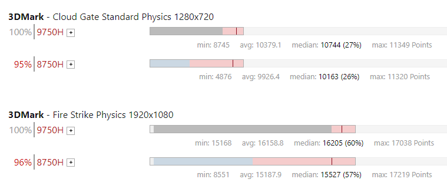

越来越多人选择酷睿i7作为笔记本处理器的核心原因
查看原文考虑到移动的需要，笔记本已经成为很多人的首选，那当我们想要买一台笔记本电脑时会怎么做？打开淘宝、天猫或者京东、苏宁等电商平台，搜索“笔记本电脑”，网站会给出一大堆笔记本电脑供你选择，大家都会发现这些电脑基本上都是英特尔® 酷睿™ ™处理器的——这不是因为电商平台算法推荐的，而是因为英特尔® 在笔记本处理器上的份额依然高达 90%，搜索 10 台笔记本中可能只有一两台是非英特尔® 处理器的。
出现这个局面不是友商不努力，而是英特尔太强力，要知道奠定酷睿™ 处理器十年大局的关键就是源于笔记本上的 Penryn 处理器，英特尔® 笔记本 CPU 高性能、低功耗的优点一直延续至今，包括最新发布的 9 代酷睿™ 移动处理器。
今年 4 月份英特尔® 正式推出了 9 代酷睿™ 高性能 H 系列处理器，共有 6 款产品，分别是酷睿™ i9 9980HK、酷睿™ i9-9980H、酷睿™ i7-9850H、酷睿™ i7-9750H、酷睿™ i5-9400H、酷睿™ i5-9300H，最多 8 核 16 线程，最高频率达到了 5.0GHz，这个水平跟桌面版 9 代酷睿™ 是一样的，至此移动处理器的性能已经不输桌面级高端产品了。
9 代酷睿™ 笔记本如何选？酷睿™ i7 综合优选
随着 9 代酷睿™ 移动处理器的上市，基于新一代处理器的游戏笔记本也多了起来，目前主流的 PC 厂商如联想、惠普、戴尔、外星人以及国内的游戏本厂商神舟、机械师、雷神、机械革命等都推出了 9 代酷睿™ 笔记本，型号非常丰富，该怎么选呢？
实际上在这些 9 代酷睿™ 笔记本中，6 款酷睿™ 处理器都有涉及，不过对消费者来说并不难选，因为 8 核的酷睿™ i9 9980HK、酷睿™ i9-9980H处理器定位旗舰中的旗舰，游戏本售价普遍在万元以上，数量也不多，除了狂热发烧友没必要选择这些笔记本。
6 核的 9 代酷睿™ 处理器中，酷睿™ i7-9850H、酷睿™ i7-9750H处理器基础频率、核心数相同，前者加速频率高了 100MHz，实际性能影响也不大，所以酷睿™ i7-9750H 目前是众多游戏本一致的选择。
- 
至于游戏性能，酷睿™ i7-9750H 处理器也是有优势的，在 Notebookcheck 的测试中，酷睿™ i7-9750H 处理器的 3DMark 性能也要比酷睿™ i7-8750H 处理器高出 5% 左右。
算下来酷睿™ i7-9750H 处理器的性能提升似乎并不是那么明显，但是这是因为 英特尔® 在这个市场只能跟自己前代产品斗，不是不愿意跟友商比，而是在高性能笔记本处理器市场上，对手的存在感太弱了，AMD 目前最高端的移动处理器还是锐龙 7 3750H，从 CPU Bencmark 的测试来看，双方的差距还是有点大。
酷睿™ i7-9750H 处理器是 6 核 12 线程，加速频率 4.5GHz，而锐龙 7 3750H 是 4 核 8 线程，加速频率 4Ghz，所以酷睿™ i7-9750H 处理器的单核性能 2492 分，比后者高了 30%，综合性能高出了 50% 以上。
对 AMD 来说，他们在移动处理器市场上还有点欠缺，目前依赖的还是 14/12nm 的锐龙，性能及能效尚不如 英特尔® 的酷睿™ 处理器，而新一代锐龙目前也只有桌面版，移动版还要再等到今年底或者明年初，不过那时候 英特尔® 又要推 10nm 工艺的十代酷睿™ H 处理器了。